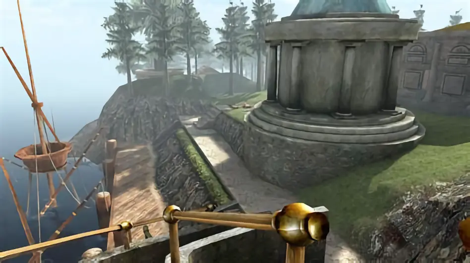
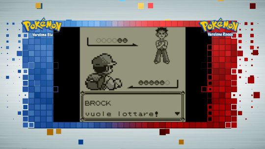
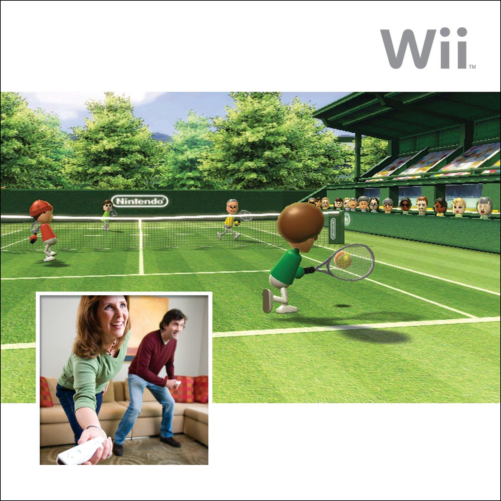
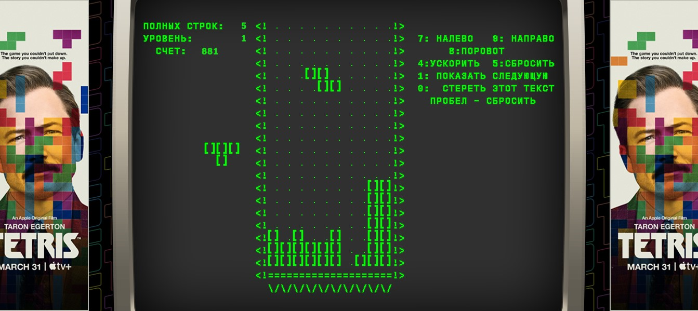
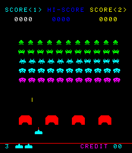
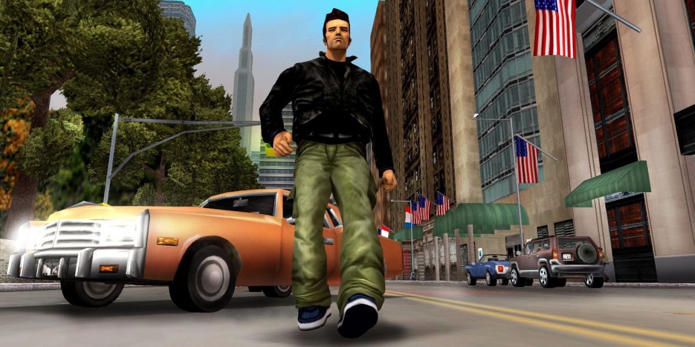

Il lavoro dietro la decima arte¶
L'evoluzione della creatività e tecnologia con i videogiochi
di Stefano Cecere
In 50 anni siamo passati da...¶

da¶

Chi sono: Stefano Cecere¶
tecnologia, giochi, educazione, musica, attivismo
- Iniziato ad hackerare i computer a 10 anni, primo VG in terza Liceo
- Sviluppo videogiochi @ Videogames Without Borders
- Game Based Learning e EdTech @ Future Education Modena
- Maneggio 2042ed.org
Pong (1972) e l'era arcade¶

- davanti allo schermo, insieme, a giocare
- Programmazione semplice, design minimalista.
- codice sorgente
Q: Video vs Videogame?¶
- sono entrambi medium
- ma qual è la più grande differenza?
L'Interattività¶
C'è intelligenza che interagisce¶
il nostro giocatore, un agente "intelligente"
a differenza di libri e film e musica che possono andare in play da soli, un videogioco, no!
Il loop¶

Controllers¶

Chi fa un videogioco?¶
- Game Designer
- Game Developer
- Artists
Avventure Testuali¶

Esempi: Zork, Colossal Adventure (1977-1980).
Coding: Codifica del testo¶
Design: mappe¶

Art: schermate¶
Arriva la grafica
Q: percezione o immaginazione?¶
- Hai mai videogioco senza immagini, solo con testo?
- Quale aspetto di un videogioco prediligi: la grafica o la storia?
Avventure grafiche Punta e Clicca¶
- Monkey Island (1990)
- The Dig
- Thimblewood Park
sprites¶
storie non lineari¶
Q: storie lineari o interattive?¶
Quali sono le differenze tra i videogiochi in cui segui una storia predefinita e quelli in cui puoi influenzare la storia? Quale preferite?
Myst (1993)¶
 Primo gioco a fare un uso massiccio di grafica pre-renderizzata e una narrativa non lineare. Oltre a enigmi davvero sfidanti.
Rendering 3D¶

Fisica della percezione!¶

Pac Man e gli avversari¶
con Pac Man (1980) arrivano gli avversari, ovvero Intelligenze Artificiali antagoniste.


Street Fighter II (1991)¶
 Innovativo per il combattimento a due giocatori e per l'introduzione delle combo, una meccanica che ha definito i giochi di combattimento successivi.
Innovativo per il combattimento a due giocatori e per l'introduzione delle combo, una meccanica che ha definito i giochi di combattimento successivi.
Doom e il 3D¶

- Doom (1993): primo salto nel 3D.
- Quake
come pietra miliare del rendering 3D
L'arte nei videogiochi¶


Assassin's creed e la storia¶
OutRun (1986)¶

Wipeout (1999)¶

Machine Learning e piloti¶
La scienza del Game Design¶

- Cosa rende un gioco coinvolgente?
- Le meccaniche di gioco, l'equilibrio tra sfida e ricompensa, e il design delle dinamiche che tengono il giocatore agganciato.
Progressione e ricompense¶
I giochi creano motivazione e soddisfazione attraverso la progressione (livelli, esperienze, abilità sbloccabili) e le ricompense (oggetti, potenziamenti, riconoscimenti). Questo aiuta a mantenere il giocatore coinvolto.

Pokémon Rosso e Blu (1996)¶
 Innovativo per l'idea di "collezionare" creature, creando una rete di interazione tra giocatori attraverso lo scambio. È diventato un fenomeno culturale, unendo narrazione, strategia e game design.
Dinamiche di Gioco e Interazione Sociale¶

- I giochi multiplayer e cooperativi creano dinamiche sociali uniche.
- Esempio: Among Us ha reso la comunicazione e il bluff centrali nell'esperienza di gioco.
World of Warcraft (2004)¶

Massively Multiplayer Online Role-Playing Game (MMORPG) che ha cambiato il modo di concepire i mondi persistenti online, introducendo meccaniche sociali complesse e un'economia virtuale.
Wii Sports (2006)¶
 Ha portato i videogiochi nel salotto di famiglie di tutto il mondo grazie ai controlli basati sul movimento. È stato cruciale per la diffusione del motion gaming e del gioco accessibile a un pubblico non tradizionale.
SimCity (2000) e la gestione di sistemi complessi¶

Bilanciamento¶

Nel giusto mezzo¶

Il bilanciamento tra difficoltà e accessibilità è cruciale. I designer devono considerare curve di apprendimento e diversità dei giocatori per evitare frustrazioni o noia
Tetris (1984)¶
 Un capolavoro di game design minimalista, con una logica semplice ma profonda. Ha introdotto la formula dei puzzle a caduta, diventando uno dei giochi più longevi e venduti di sempre.
Space Invaders (1978)¶
 Uno dei primi grandi successi arcade. Innovativo per l'uso della progressiva difficoltà, che aumentava man mano che i nemici si avvicinavano al giocatore.
Level Design¶
La costruzione degli ambienti di gioco e il posizionamento di sfide e nemici all'interno di essi è cruciale per il ritmo e la narrativa. Ogni livello racconta una storia attraverso il design.

Super Mario Bros (1985)¶
 Pietra miliare nel design dei platform 2D, introdusse meccaniche precise di controllo e un level design che insegnava al giocatore le regole del gioco attraverso l'esperienza diretta.
Pietra miliare nel design dei platform 2D, introdusse meccaniche precise di controllo e un level design che insegnava al giocatore le regole del gioco attraverso l'esperienza diretta.
Scelte e conseguenze¶
Dare ai giocatori la possibilità di fare scelte significative che influenzano la trama o l'esito del gioco rende l'esperienza più personale e coinvolgente.

Fortnite (2017)¶

Innovativo per la combinazione di un battle royale e un sistema di costruzione in tempo reale, unito a un modello free-to-play che ha ridefinito il mercato dei giochi online e il concetto di giochi come servizi (games as a service).
Minecraft (2011) e Narrativa Emergente¶
Ha introdotto il concetto di sandbox totale, permettendo ai giocatori di costruire e creare liberamente in un mondo infinito. Ha aperto la strada al genere "creativo" e ha dimostrato il potere del gioco e della narrativa emergente, che viene generata spontaneamente dall’interazione dei giocatori con il mondo di gioco, piuttosto che dalla trama predefinita.
Narrazione Interattiva¶

- Final Fantasy, The Last of Us: narrazione interattiva e scelte narrative.
Giochi Mobile¶

- Dalla semplicità di Snake ai giochi complessi come Angry Birds. e Candy Crush, e come ha cambiato il mercato e il design.
- L'importanza del design accessibile.
Musica, Maestri¶

Effetti sonori e Ambiente¶


Journey (2012)¶

Il suo contributo è stato particolarmente rilevante grazie alla colonna sonora dinamica e interattiva composta da Austin Wintory. La musica in Journey non è solo un accompagnamento, ma si adatta alle azioni e alle emozioni del giocatore, creando un'esperienza profondamente immersiva.

Grafica e Modellazione 3D¶

blender.org¶


tinkercad.com¶

Rigging e Animazione¶

Procedural Generation¶

- La generazione procedurale di ambienti e oggetti è diventata sempre più popolare, specialmente in titoli come No Man's Sky (2016), che genera in modo procedurale interi pianeti e universi.

Coding¶
Dominio digitale¶

Codice Binario¶

Codice o blocchi?¶

Visual scripting¶

Graphics Programming: Shaders¶

Gli shader sono piccoli programmi che definiscono il comportamento della luce e il rendering delle superfici nei videogiochi. I giochi moderni fanno uso massiccio di shader complessi per creare effetti realistici di luce, ombre e riflessioni.

Simulazione Fisica e Collision Detection¶

- La simulazione fisica è fondamentale per creare movimenti realistici e interazioni tra gli oggetti. Half-Life 2 (2004) è stato uno dei primi giochi a fare uso estensivo del motore fisico Havok, introducendo oggetti interattivi e dinamiche fisiche realistiche nel gameplay.
AI e Pathfinding¶

Il pathfinding è la tecnica usata per far sì che gli NPC trovino il percorso migliore all'interno di un ambiente complesso. Giochi come F.E.A.R. (2005) hanno rivoluzionato l'IA dei nemici, rendendoli più intelligenti e adattabili.
The Legend of Zelda (1986)¶
Introduzione di un mondo aperto da esplorare, combinando elementi d'avventura, azione e puzzle-solving, un mix di meccaniche che ha influenzato interi generi.
Grand Theft Auto III (2001)¶
 Ha rivoluzionato il concetto di mondo aperto in 3D, permettendo ai giocatori di esplorare liberamente un ambiente urbano dettagliato con una grande libertà d'azione e scelte.
AI: Behaviour Trees¶


Q: la miglior Intelligenza¶
Qual è il comportamento più intelligente che avete visto in un nemico o in un personaggio non giocante? Cosa rende un'IA nei videogiochi davvero convincente?
Il Futuro dei Videogiochi: XR¶

Economia¶

Come si sviluppa un gioco?¶

Consigli per iniziare¶
- "giocare" con i tutorial (unity, unreal)
- canale youtube
- copiare giochi (semplici) esistenti
- Game Jams
- parlate con il vostro prof!
Strucked (Unity online)¶

- gratuito
- web
- facile
- multigiocatore
- visual scripting
Roblox Studio¶

{kind=link}
{kind=link}
{kind=link}
{kind=link}
{kind=link}
{kind=link}
{kind=link}
{kind=link}
{kind=link}
{kind=link}
{kind=link}
{kind=link}
{kind=link}
{kind=link}
{kind=link}
{kind=link}
{kind=link}
{kind=link}
{kind=link}
{kind=link}
{kind=link}
- gratuito
- PC
- completo
- LUA
- multiplayer
GameMaker¶

- gratuito
- 2D
- facile
- visual scripting
Unity¶
- gratuito (pere iniziare)
- professionale
- universale
{kind=link}
Godot¶

- opensource
- completo
- in crescita
- non banale
Impariamo Godot¶
{kind=link}
Global Game Jam¶
migliaia di giochi, tutti con codice sorgente
{kind=link}